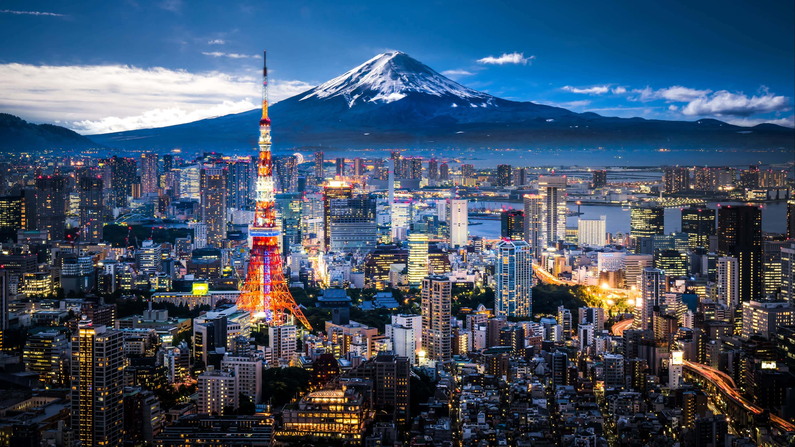
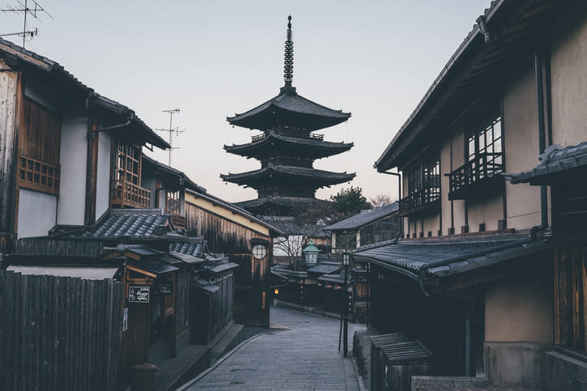
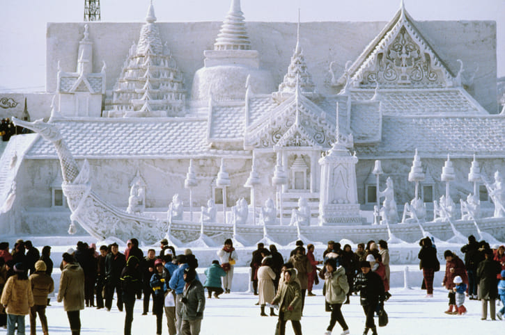
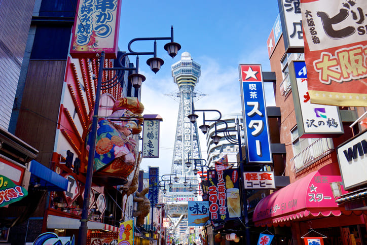
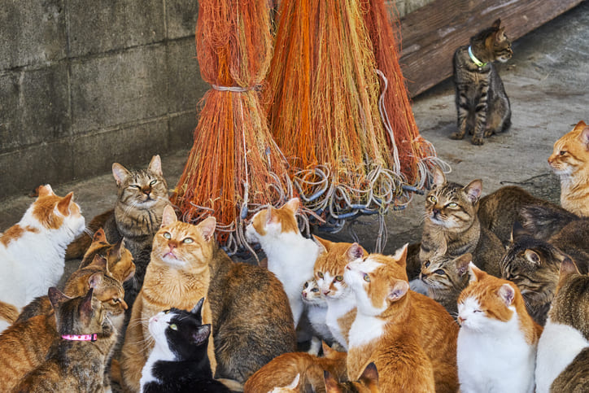
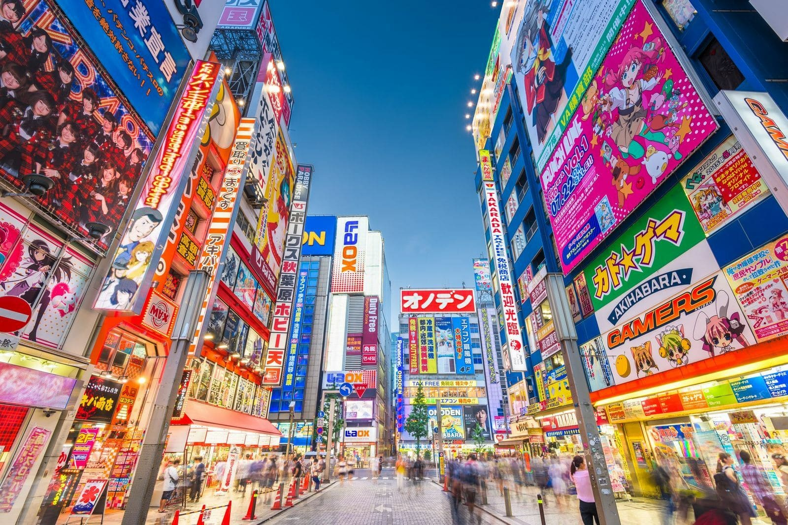

Lugares Inolvidables

Tokio
Tokio "Tōkyō", que significa "capital del este"

Kioto
Kioto (京都市 Kyōto-shi?), en español «ciudad capital»

Sapporo
Sapporo«Sat poro pet» (サッ・ポロ・ペッ), que en idioma ainu significa «gran río seco».

Osaka
Osaka (大阪市 Ōsaka-shi?, lit. Colina grande)

Aoshima
Aoshima podría ser la isla de los gatos más famosa de Japón

Akihabara
Akihabara (秋葉原?) es una zona comercial importante de Tokio, Japón. Famosa tienda de pasatiempos en Akihabara en 2019 La mayoría de los comercios de allí se dedican a la venta de productos electrónicos, computadoras, accesorios y gadgets; además de entretenimiento audiovisual, como anime, manga y videojuegos